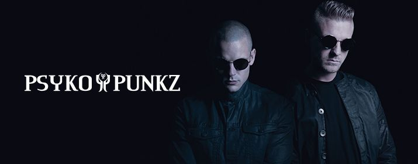

Q-Dance
Das niederländische Hardstyle-Duo besteht aus Sven Sieperda und Wietse Amersfoort. Psyko Punkz waren
bereits auf den größten Festivals der Welt zu sehen, wie Tomorrowland, Qlimax, Hardbass, Decibel, Defqon.1 (NL und AUS).
2012 komponierten sie die Qlimax Hymne Fate or Fortune und 2014 die HymneBack Again für das Decibel Outdoor Festival.
Zudem erhielten sie 2010 den Fear.FM Award für „Best Track“ und 2011 den Hard Dance Award für „Best New Face“.